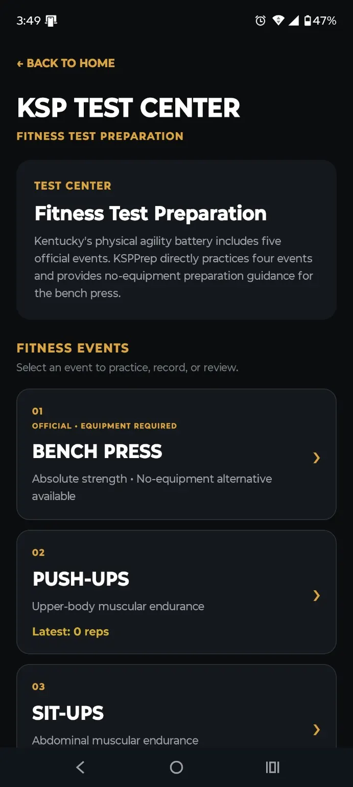
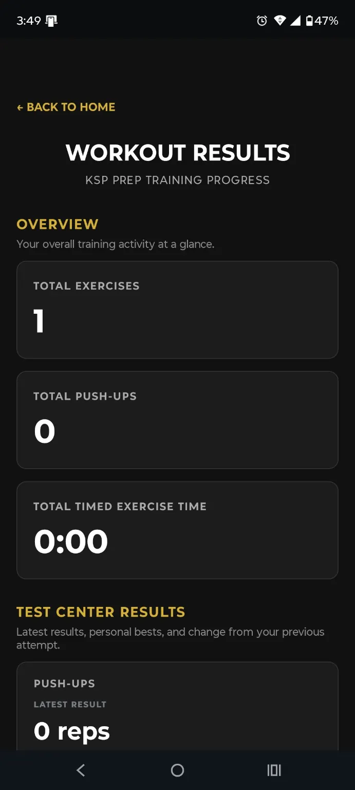
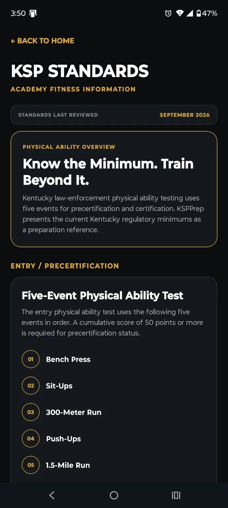
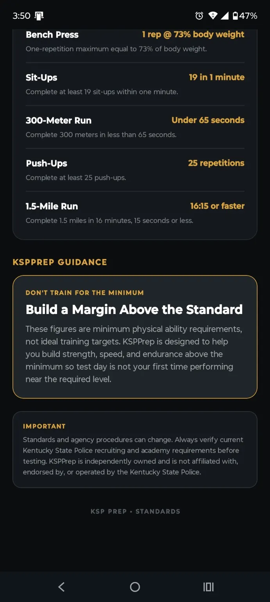

Bench Press
Absolute-strength event with no-equipment preparation guidance available in KSPPrep.
KSPPrep gives you one place to practice supported fitness events, record results, review personal bests, and keep test-focused preparation connected to your training plan.

The Test Center keeps event practice, recorded performance, personal bests, and standards reference close together so each attempt has context.
KSPPrep distinguishes between official events and supplemental preparation so users can see what belongs to the referenced test battery and what is added only for training support.
Absolute-strength event with no-equipment preparation guidance available in KSPPrep.
Record repetitions and compare the latest result against your personal best.
Track abdominal muscular-endurance performance over repeated attempts.
Record short-distance running performance and maintain an event-specific history.
Track aerobic running performance and personal-best progression.
A no-equipment core-endurance exercise included by KSPPrep for supplemental preparation.
Workout Results brings together latest attempts, personal bests, comparison prompts, and recent activity so progress is visible instead of buried.



KSPPrep presents reviewed Kentucky physical-ability standards as a preparation reference and encourages users to build a margin above the minimum instead of training only to the line.
Standards and agency procedures can change. Always verify current recruiting, academy, precertification, and certification requirements with the responsible Kentucky authority before testing.
KSPPrep is independently owned. It is not affiliated with, endorsed by, sponsored by, or operated by the Kentucky State Police or the Commonwealth of Kentucky. Official standards and agency requirements control.